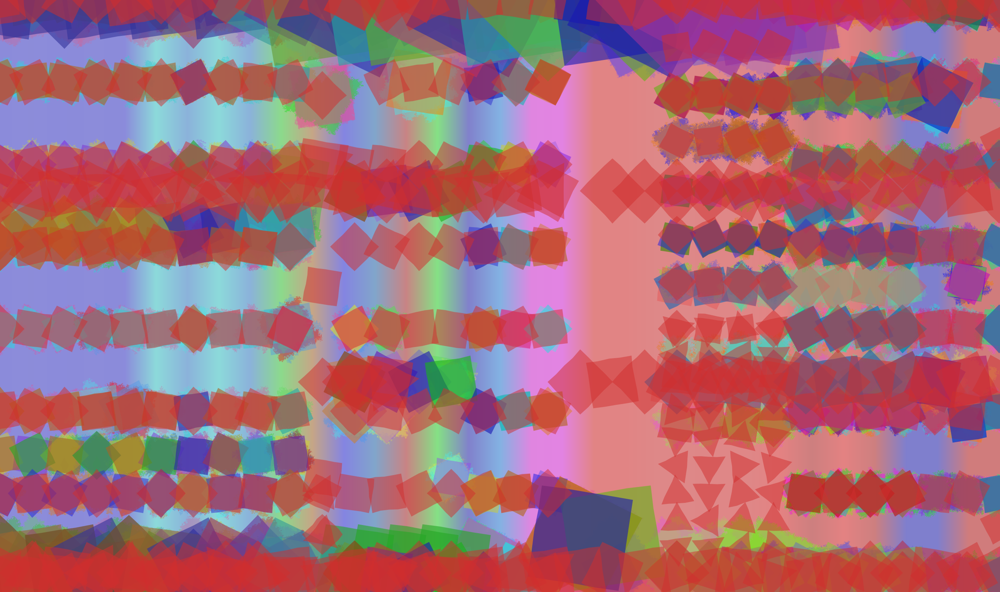

Approach: This week we did more size and color tests and started to correct some bugs from our previous approach: circles had one empty line in the middle; one of the sides of the poligons was not "properly deformed"; Correction of the screen' size and margin. Moreover, we started to learn a bit about Simple Term Fourier Transform in order to process the signal to distinguish between different instruments according to its harmonics. Finally we started to write our document and read about Genetic Algorithms.
Cross-Domain Association: Lower octaves have lower luminosity values <-> higher octaves have higher luminosity values. Music with lower BPM are maped to objects with bigger size. Different instrument's families are mapped to different image shapes - according to the MIDI program change property. Time Signature: the lower the numerator, the bigger the shape. In resume: Harmony - Background; Melody - Elements; Rhythm - Sizes
Questions? Shall we consider the event consonance to define the irregularity of the shape? Which associations should we do between instruments and shapes? We split our screen vertically according to the number of measures: how can we keep the ideia of continuity?
Léo Delibes
Flower Duet : Flute, Violin
Vivaldi
Winter Second Movement: Violin(2), Flute, Trumpet, Piano

Johann Sebastian Bach
BWV 156 : Flute and Piano
Mazurka in F Minor : String Quartet - Violin(2), Viola, Violoncelo
Beatles Medley 
Experiments Week #7
Approach: First of all, we decided to consider only the first 32 measures of each part in the score in order to better perceive music events represented in the image - with this approach we can perceive some structure in the music without having the sensation of unexpected cut. Then, we started by changing the values for the object's luminosity : we decided to have luminosity range values between 0.4 and 0.7 in a 0 (black) - 1 (white) scale mapped to different octaves. Later, we decided to change the size of different elements according to a given function that considers the duration of the event being analysed as well as the music' BPM. Morevoer, we decided to associate different shapes for different instruments that are being played, as well as its starting point in the screen. Finally, we did a lot of color and deformation tests to more approximate the images environment/mood to the given image.
Cross-Domain Association: Lower octaves have lower luminosity values <-> higher octaves have higher luminosity values. Music with lower BPM are maped to objects with bigger size. Different instrument's families are mapped to different image shapes - according to the MIDI program change property.
Questions? Shall we consider the event consonance to define the irregularity of the shape? How to split the instrument in different families in a way music21 understands? How can we further represent the size of the elements (and alpha value) that better aproximates the musical characteristics?
Mozart
Oboe Concert in C
C. Debussy, arr. T. Argentieri
Reverie
Ludwig Van Beethoven
Moonlight Sonata 1st Movement
Experiments Week #6
Approach: This week our approach is different. We are no longer using only circumferences but rather we decided to use different geometric shapes to represent all the instruments presented in the music, while we keep the same location for each element (according to its offset in the score). Our main shape is for the piano - circles - since it is the simplest instrument, in which every pitch can be played: characteristic that no other instrument has. Then, for each instrument the algorith founds, we introduce new shapes with n sides, starting with triangles. Moreover, each element size now is related to both the duration and BPM of the event in the score, since the lower the BPM, the smaller the element. For the alpha value of the elements, we have three different approaches, even though we only present one of them - the duration of the event. Lastly, this week we have different images for different music eras, from Barroque to Romantic, considering the Classic proper. Different Autumn Leaves approaches are also presented.
Cross-Domain Association: We overlapped the color wheel, circle of fifths and chromatic circle to get the association between pitch and colors. HLS Color Model. Hue is related to the Pitch, Luminance to the Octave and S to the Volume of the note/chord being played. Octaves' range is no more linear. Music's BPM are related to the overall luminance of the image: values between 60 and 160 BPM. Consonant chords have less irregularity than dissonant ones. This week, the elements' alpha value is directly related to the duration of the event in the whole score. Element's rotation are arbitrary.
How to read? Start in the left top corner. Each column represent one measure in the score, the elements in each column represent the measure' elements. Thus, up-down and then left-right.
Questions? Shall we consider the event consonance to define the irregularity of the shape? How to split the instrument in different families in a way music21 understands? What limits shall we consider to the music? And what about to the image sizes? How can we further represent the size of the elements (and alpha value) that better aproximates the musical characteristics?
Minimalism:
Terry Riley
In C

Impressionism:
Mussorgksy
Pictures at an Exhibition

Debussy
Suite Bergamesque - Claire de Lune

Romantic Proper:
Stravinsky
Spring Rounds

Mahler
Symphony No. 5

Elgar
In the Dawn

Brahms
Hungarian Dance

Romantic Transition:
Ludwig Van Beethoven
Sinfonia n.º 9

Classic Proper:
Haydn
Symphony

Mozart
Oboe Concert in C

Barroque Music:
Vivaldi
Winter

Previous Approaches:
Léo Delibes
Flower Duet

Glen Miller
In The Mood

Claude Debussy
Clair de Lune from "Suite Bergamasque" L. 75

Different Approaches for Autumn Leaves
Bill Evans
Autumn Leaves

Cannonball Adderley
Autumn Leaves

Experiments Week #5
Approach: This week we decided to keep on going with the approach of analyzing rather the time instance than the instruments and parts individualy. We kept analysing color schemas and possible new associations that could be made in order to perceive more musical characteristics in the generated artefacts. By styding the shape's deformation algorithm, we tried to start drawing our sketches with another paiting style - Crayon - which introduces more abstraction into the image. Furthermore, now the position of each element on the image is related to the offset of the event that is being analysed - either chords (vertically), or measures (horizontally) - which results (in my opinion) in less correlation between music and image.
Cross-Domain Association: We overlapped the color wheel, circle of fifths and chromatic circle to get the association between pitch and colors. HLS Color Model. Hue is related to the Pitch, Luminance to the Octave and S to the Volume of the note/chord being played. Whole circumferences are notes or chords that have the largest duration in the score. Music's BPM are related to the overall luminance of the image. Consonant chords have less irregularity than dissonant ones. This week, the elements' alpha value is directly related to the duration of the event in the whole score.
How to read? Start in the left top corner. Each column represent one measure in the score, the elements in each column represent the measure' elements. Thus, up-down and then left-right.
Autumn Leaves
Piano Jazz

The previous image was generated considering only full circumferences, since we're working with Jazz music.
Maurice Ravel
Pavane - Pour Une Infante Défunte


Here we can see the differences that the alpha-value in the color introduces. Previously, this value was directly related to the octave of the event being analyzed - the octave of the root in case of chords, the octave of the pitch in case of notes. Now, it is related to the duration of the event. Furthermore, we changed the angle of the semicircle in order to take only into account the duration of the measure in analysis.
Richard Wagner
Ride of the Valkyries - From Act III of the Opera "Die Walkure"

Johann Sebastian Bach
BWV 394 — Chorale, O Welt, sieh hier dein Leben
Experiments Week #4
Approach: This week our approach was related to circumferences. The analysis of the music score is no more related to the part and measure sequences, but to the time instance of the music. This way, the music is analyzed as a whole in which time represents circumferences. In each moment, the algorithm searches for notes and chords that are played at the same time instance, merging all together in circumferences and semi-circunferences with the size directly related to the duration of each element.
Cross-Domain Association: We overlapped the color wheel, circle of fifths and chromatic circle to get the association between pitch and colors. HLS Color Model. Hue is related to the Pitch, Luminance to the Octave and S to the Volume of the note/chord being played. Whole circumferences are notes or chords that have the largest duration in the score. Music's BPM are related to the overall luminance of the image.
How to read? Start in the left top corner. Each column represent one measure in the score, the elements in each column represent the measure' elements. Thus, up-down and then left-right.
Ludwig Van Beethoven
Moonlight Sonata 1st Movement

Ludwig Van Beethoven
Sinfonia n.º 9

Claude Debussy
Clair de Lune from "Suite Bergamasque" L. 75

Claude Debussy
Suite Bergamasque - I. Prelude

Claude Debussy
Images - Reflets dans l'eau

Experiments Week #3
Johann Sebastian Bach
BWV 66.6 — Cantata, Erfreut euch, ihr Herzen
Johann Sebastian Bach
BWV 16.6 — Cantata, Herr Gott, dich loben wir
Another Approach:

Johann Sebastian Bach
BWV 300 — Chorale, Du großer Schmerzensmann
Experiments Week #2
Johann Sebastian Bach
BWV 66.6 — Cantata, Erfreut euch, ihr Herzen

Johann Sebastian Bach
BWV 300 — Chorale, Du großer Schmerzensmann

Johann Sebastian Bach
BWV 1.6 — Cantata, Wie schön leuchtet der Morgenstern

Early Experiments - Week #1
Johann Sebastian Bach
BWV 1.6 — Cantata, Wie schön leuchtet der Morgenstern

Another Approach: